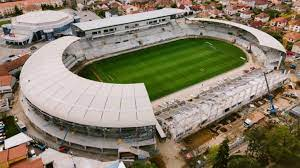

Unul dintre cele mai importante obiective turistice din Sibiu, Podul Minciunilor este pasarela pietonală din centrul istoric.
În Sibiu, Turnul Sfatului este situat între cele două piețe ale orașului și a fost din totdeauna considerat un simbol reprezentativ.
Parcul Natural Dumbrava Sibiului este la doar 4 km de centrul orașului Sibiu și are peste 100 de specii de plante și animale.
Este un muzeu care se afla pe o suprafață de 96 de hectare si este unul dintre cele mai mari muzee în aer liber din România.
Catedrala, situată în Piața Huet, uimeste cu arhitectura sa gotică, este una din cele mai frumoase biserici din Transilvania.
Stadionul Municipal Sibiu servește în principal drept stadionul de acasă al echipei de fotbal FC Hermannstadt.